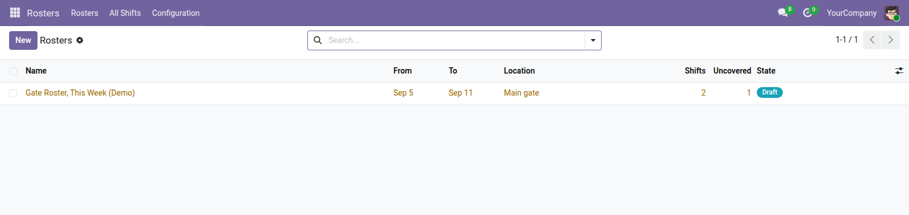

<section style="padding:32px 0;font-family:Roboto,Helvetica,Arial,sans-serif;color:#2b3a34;">
  <div style="max-width:900px;margin:0 auto;padding:0 24px;">

    <p style="font-size:12px;letter-spacing:.14em;text-transform:uppercase;color:#0b6b57;font-weight:600;margin:0 0 10px;">Human Resources</p>
    <h1 style="font-size:40px;line-height:1.1;margin:0 0 14px;font-weight:700;">Shift Rosters</h1>
    <p style="font-size:19px;line-height:1.55;color:#4c5a55;max-width:640px;margin:0 0 28px;">Schedule guards, drivers or a reception desk — and be told when the roster is broken, at the moment it breaks.</p>

    <div style="background:#f6f7f5;border-left:3px solid #0b6b57;padding:18px 22px;margin:0 0 32px;font-size:16px;line-height:1.6;"><strong>Odoo Planning is Enterprise.</strong> The usual fallback is a spreadsheet per month, and it always fails the same two ways: somebody ends up on two shifts at once, or a night nobody is covering goes unnoticed until it is that night.</div>

    <div style="margin:0 0 34px;">
      
      <div style="font-size:13px;color:#75837d;padding-top:8px;">A week's roster, with uncovered shifts counted</div>
    </div>

    <h2 style="font-size:24px;margin:0 0 16px;font-weight:600;">Both failures are checked</h2>
    <ul style="font-size:16px;line-height:1.7;color:#4c5a55;margin:0 0 30px;padding-left:20px;">
      <li><strong>Double-booking is refused outright</strong> — assigning somebody to overlapping shifts raises an error when it happens, rather than being discovered on the night</li>
      <li><strong>Publishing with gaps takes a second, deliberate action</strong> — the normal button refuses and says how many shifts are uncovered; a separate one publishes anyway, for when the gap is known and accepted</li>
    </ul>

    <h2 style="font-size:24px;margin:0 0 16px;font-weight:600;">Night shifts are handled properly</h2>
    <p style="font-size:16px;line-height:1.65;color:#4c5a55;margin:0 0 30px;">A shift from 18:00 to 06:00 ends on the following day. The hours are real datetimes rather than a pair of clock times that quietly compute a negative duration — which is the bug every hand-built roster spreadsheet has.</p>

    <h2 style="font-size:24px;margin:0 0 16px;font-weight:600;">Shift templates</h2>
    <p style="font-size:16px;line-height:1.65;color:#4c5a55;margin:0 0 30px;">The patterns you use over and over — Day 08:00–16:00, Night 18:00–06:00 — so building a month means choosing a shift and a person rather than typing times. The hours come from the template and can still be overridden on the day it matters.</p>

    <h2 style="font-size:24px;margin:0 0 16px;font-weight:600;">Draft, published, closed</h2>
    <table style="width:100%;border-collapse:collapse;margin:0 0 30px;font-size:15px;">
      <thead><tr style="background:#edf0ec;">
        <th style="text-align:left;padding:10px 14px;border-bottom:1px solid #dce1db;">State</th>
        <th style="text-align:left;padding:10px 14px;border-bottom:1px solid #dce1db;">Meaning</th>
      </tr></thead>
      <tbody>
        <tr><td style="padding:9px 14px;border-bottom:1px solid #eef1ed;">Draft</td><td style="padding:9px 14px;border-bottom:1px solid #eef1ed;">being planned; nobody has been told yet</td></tr>
        <tr><td style="padding:9px 14px;border-bottom:1px solid #eef1ed;">Published</td><td style="padding:9px 14px;border-bottom:1px solid #eef1ed;">the roster people are working to</td></tr>
        <tr><td style="padding:9px 14px;border-bottom:1px solid #eef1ed;">Closed</td><td style="padding:9px 14px;border-bottom:1px solid #eef1ed;">finished — and it cannot be reopened, you copy it</td></tr>
      </tbody>
    </table>

    <div style="border-top:1px solid #dce1db;padding-top:20px;font-size:14px;color:#75837d;">Odoo 19.0 Community · depends on <code>hr</code> and <code>mail</code>.</div>

  </div>
</section>
